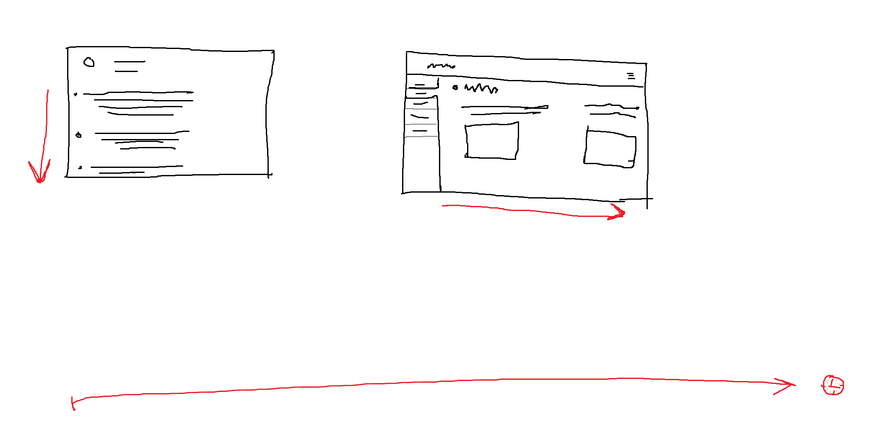

Hello stranger, I'm a web developer in progress and this will be my personal website.
| Spanish | Native |
| English | Near native, C1 certificate |
| Japanese | Currently in lessons, close to N5 (first level) |
| French | Reading comprehension semester at UNAM |
| HTML | This webpage is how much I know! |
| CSS | Next thing on my list |
I like languages, it is a way to know different people and it's culture, and I've been using my abilities to accomplish different goals throughout my carrer. Here you'll find more info about what I've done and am currently doing.
Great things don't come easy, I will post my progress in the programing world here.
This is how I want my website to look like in the future, I want to have a website that is divided into different folders and that can be scrolled to the sides, I don't know if that's possible yet
Being humble, patient and persistent has helped humanity accomplish wonderful things. In this section you will find what I've learned either by having someone teaching me at school or with the help of the records left by those that were here previous than me.
If you are curious like me you may wonder what I enjoy doing. Here is a sight of my interests